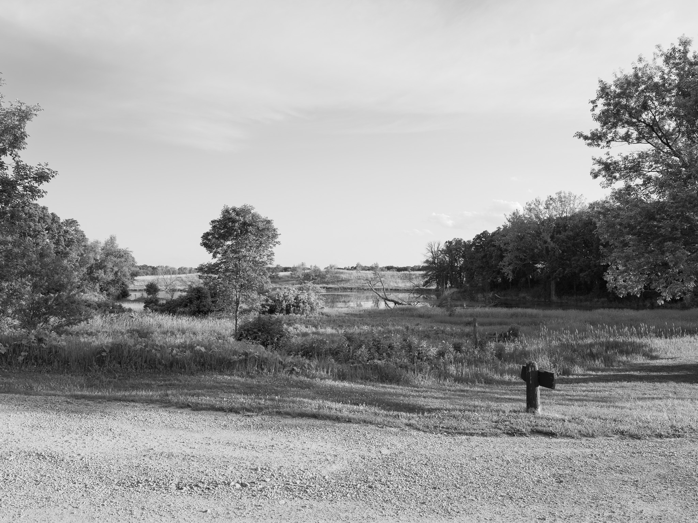
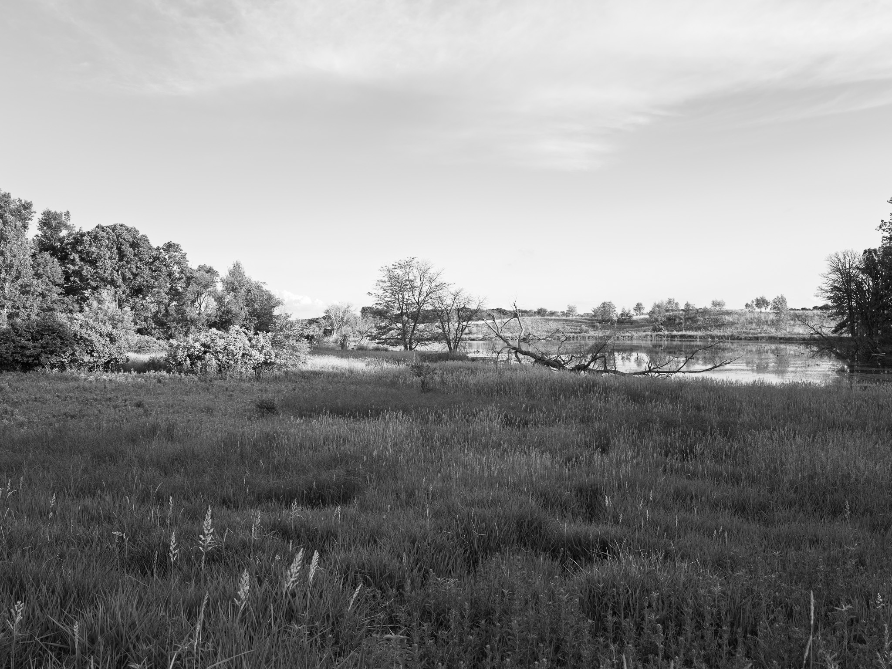
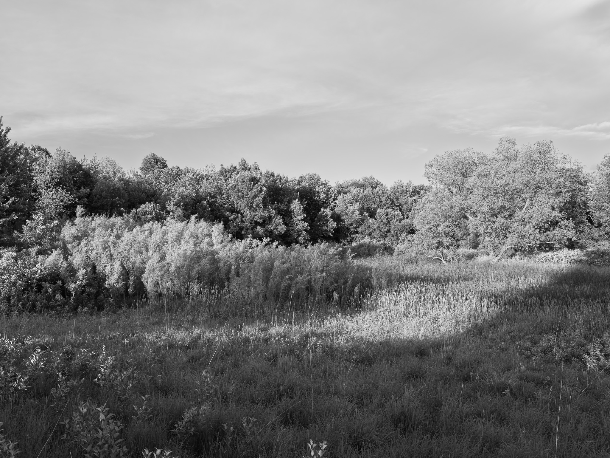
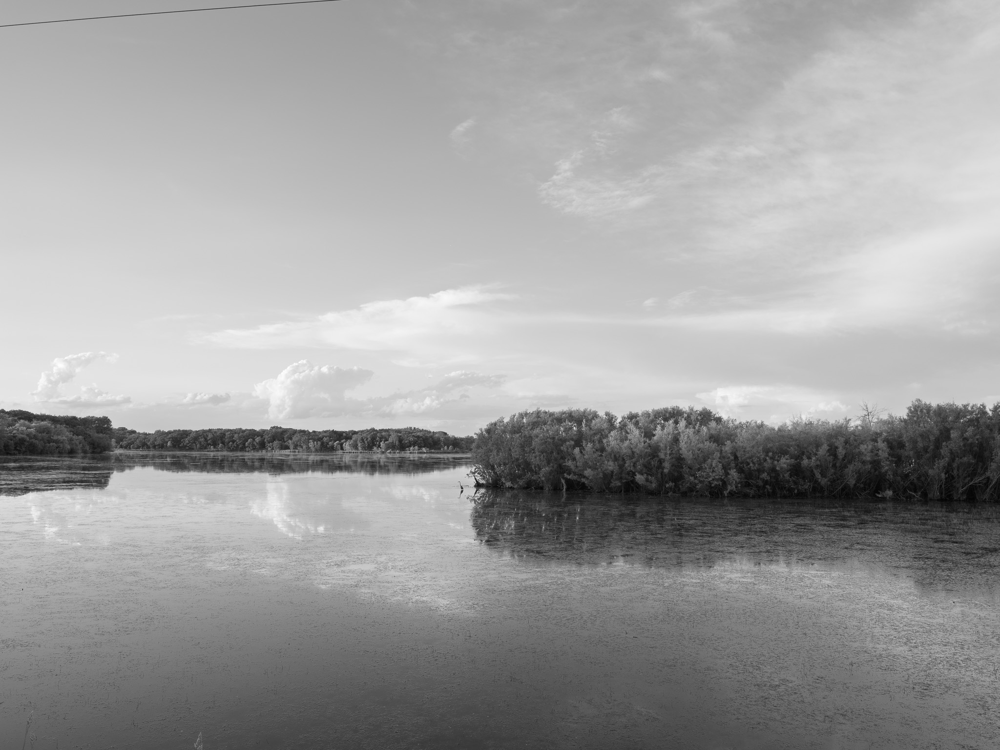
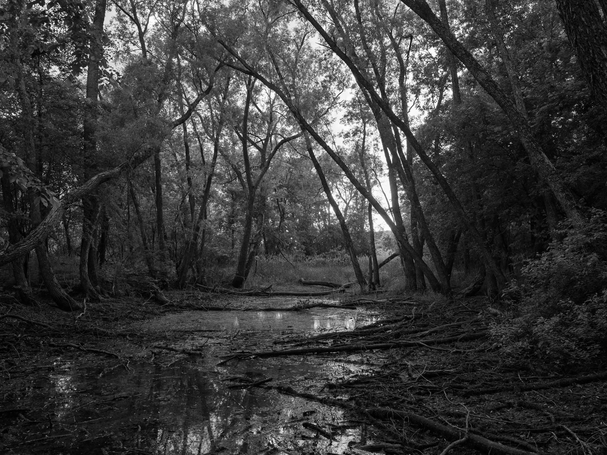

Public Lands Institute
Map
Archive
About
Myre-Big Island State Park
MN

Myre-Big Island State Park 1 · 2026-06-05
_DSF2573.jpg

Myre-Big Island State Park 2 · 2026-06-05
_DSF2577.jpg

Myre-Big Island State Park 3 · 2026-06-05
_DSF2579.jpg

Myre-Big Island State Park 4 · 2026-06-05
_DSF2609.jpg

Myre-Big Island State Park 5 · 2026-06-05
_DSF2617.jpg
View all 5 images →
← Palisades State Park
Maquoketa Caves State Park →